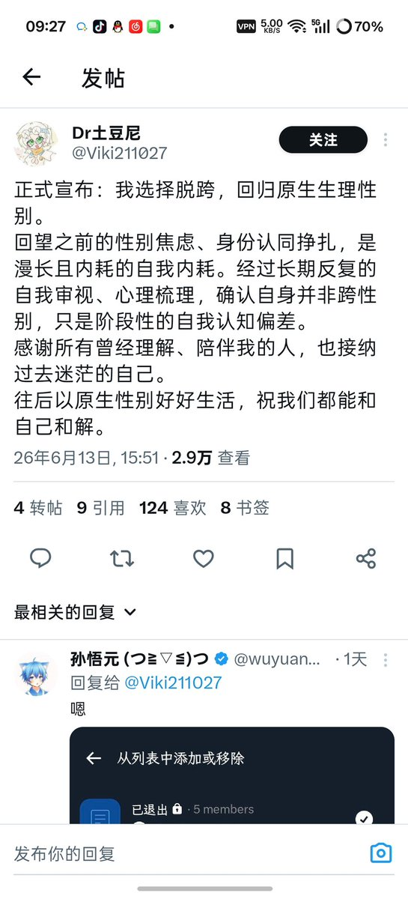
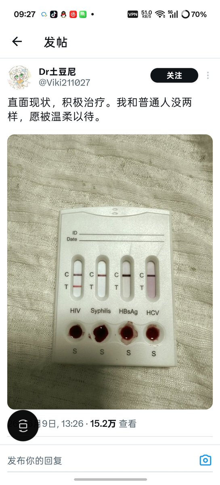
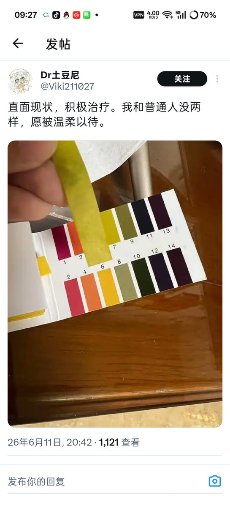
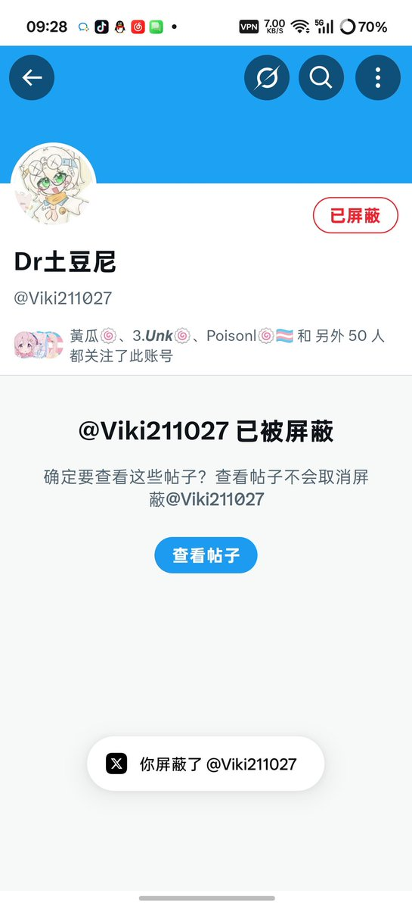

🍀🍥竹蜻蜓🍥🍀
@zqtlovekris99
@Xiaoyi_0324 哦原来是他啊这下认识了，我还说为什么人家发个回归原始性别一堆人说是串子，这下看懂了




櫻川由奈🏳️⚧️Sakura🍥
@Xiaoyi_0324
我总算知道和我在互联网上吵架的是什么人了 这么能串 和任成轩坐一桌 你俩真是神了
还有我的这些互关你们为什么要关注这个炒作狗 炒一次也就算了 我刚去看了一眼 神tm不止一次 第三张图我要没看错那是PH试纸吧 轻松绷住
我真的很少block人 除非你主动block我或者你真的恶心到我了 何意味 https://t.co/GtWi7vWUoK